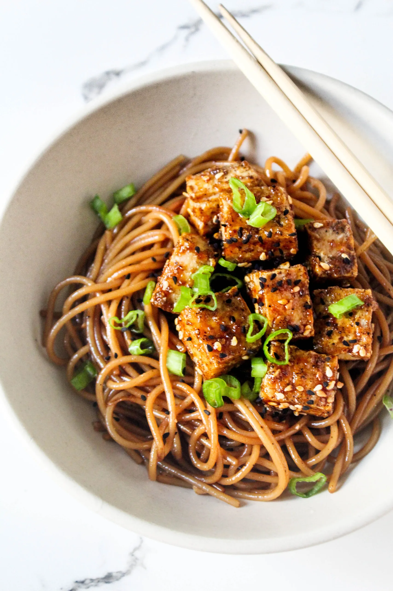

‘Eggy’ Tofu Noodles

Description
This recipe works perfectly for a simple lunch. But, of course, there's no reason why you can't have it for dinner too. You'll need a colander or sieve for this recipe.
Ingredients
- Noodles (I use wholewheat noodles)
- Extra firm tofu
- Kala namak (black salt). This is what gives the dish its eggy flavour.
- Two Spring onions
- Cooking oil
Steps
- Pre-heat 1-2 tablespoons of cooking oil in a large frying pan at medium to high heat; watch the oil so it doesn't burn. How much oil you will need to use depends on how much tofu you'd like to cook. There's no real rule to how much tofu you need. I like to aim for 10-15g of protein per serving of tofu. If you're using extra virgin olive oil, make sure to let it heat fully to remove its bitter taste. A way to tell if the oil has become hot enough is by titling your pan, and seeing if the oil moves quickly. You may also notice a shimmer to the oil.
- Open your tofu and press with kitchen towel to remove excess moisture. Then dice the tofu into cubes. I find 12-16 small cubes to be ideal, in accordance with a 10-15g serving of protein from tofu alone.
- Once the oil is preheated, add in black salt to your liking, and mix.
- Add your tofu to the pan and coat evenly in the oil and salt mixture. Cook at medium-high temparature for 10-12 minutes — the longer it cooks, the more crispy and chewy it becomes, and the more golden-brown in colour. Keep an eye on the tofu though, as it can stick to the pan if left cooking on one side for too long. Every four minutes or so, make sure to give the tofu a stir.
- Whilst the tofu cooks, wash your spring onion(s) and cut them horizontally, down the stem.
- We want our noodles to finish cooking 1-2 minutes before the tofu. So, be sure to bring a saucepan of water to a boil in time for that to be possible. Once the water is boiled, add the noodles.
- Optional: add the spring onion cuts into the frying 2-3 minutes before the end of the tofu cooking time, making sure to coat them evenly in the oil. Cooking the onions makes them taste milder and sweeter than if they were left raw.
- Drain noodles in colander or sieve, esnuring to reserve some of the starchy water in a cup. Then add the noodles to frying pan, along with the starchy water (about 1-2 tablespoons), and stir. The starchy water emulsifies our oil/salt mixture and allows it to adhere to the noodles, making them more flavourful. Tip: if you're feeling particularly lazy and adventurous, add the nooodles directly from colander to pan when they have only been partially drained. This saves time, and saves on washing up too! But it is less precise.
- Serve on to a plate or bowl.
- If you opted not to cook the spring onions, now is the time use them as a tasty garnish.